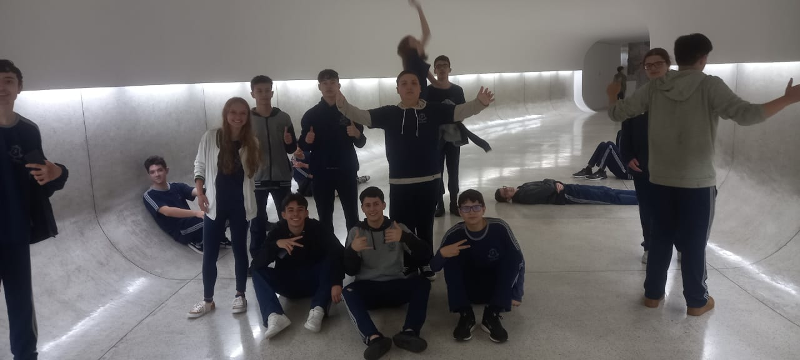

Minha Trajetória
Foi muito legal, pois fiz diversos amigos, saí bastante para fazer atividades, joguei basquete, fui a parques e joguei videogames com eles.
Como foi?
No geral, foi um ano bem tranquilo — não tinha muitas preocupações, vivia dormindo durante a tarde e jogando, hehe.
Com toda certeza foi um ano de novos aprendizados e vivências.
Pessoas na foto
- Eu
- Maicon
- Kotim
- Hugo